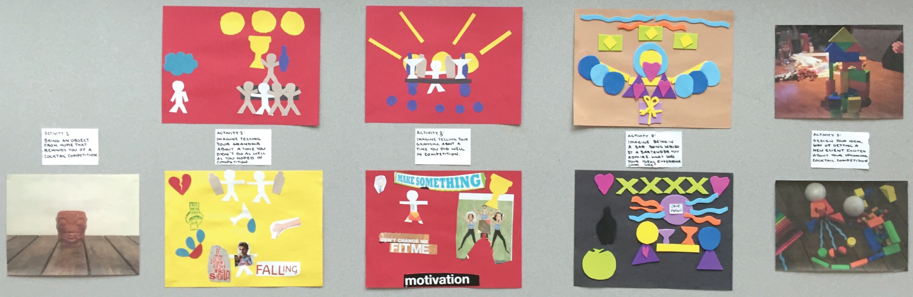
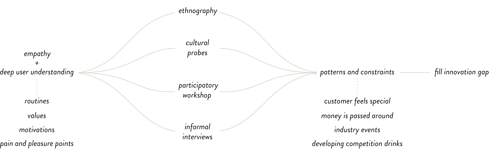

interaction design, service design
Tap proposes to increase the time a bartender has to interact with customers, by extending the service period outside of the bar. It's an app for bartenders to keep track of their customers, to contact them via SMS and check in and invite them to events and tastings they might like, or even just to say "Hi. Thanks for coming in last night."
For this 12 week long interaction design project, we were tasked to design anything for an existing social group of our choice as the client. We would identify pain and pleasure points within the B2C environment and pinpoint opportunities to shape a design that meets those needs while bringing value to both the company's brand and strengthening its relationship with its customers.
For this 12 week long interaction design project, we were tasked to design anything for an existing social group of our choice as the client. We would identify pain and pleasure points within the B2C environment and pinpoint opportunities to shape a design that meets those needs while bringing value to both the company's brand and strengthening its relationship with its customers.
Ethnography
Conducted over ten weeks, data was collected through on-site visits and observation, note taking, audio and video recording, photography, and informal interviews with bartenders and patrons. As a result, we were able to identify behavioural patterns and reccuring themes that help define the culture around being a bartender.
Cultural Probes
Each cultural probe contained 3 magnets with tabs to tally good, average, and bad days, 1 cocktail and bar-themed Mad Libs shareable notepad, 1 pen, 1 green and brown leather wallet for personal receipts, and 1 green leather bound personal cocktail recipe notebook. As a result, we learned about with whom and how they spend their time and money.
Participatory Workshop
During both two hour sessions, participants were given a toolkit and were instructed to assemble 2D and 3D collages based on a scenario given to them. Both participants were bartenders employed at Clough Club. The results helped us understand both participants as a bartender and as a customer. Not only did these generate insights that helped identify values paths that facilitate customer retention, but it also futhered our knowledge in the bartending culture.

